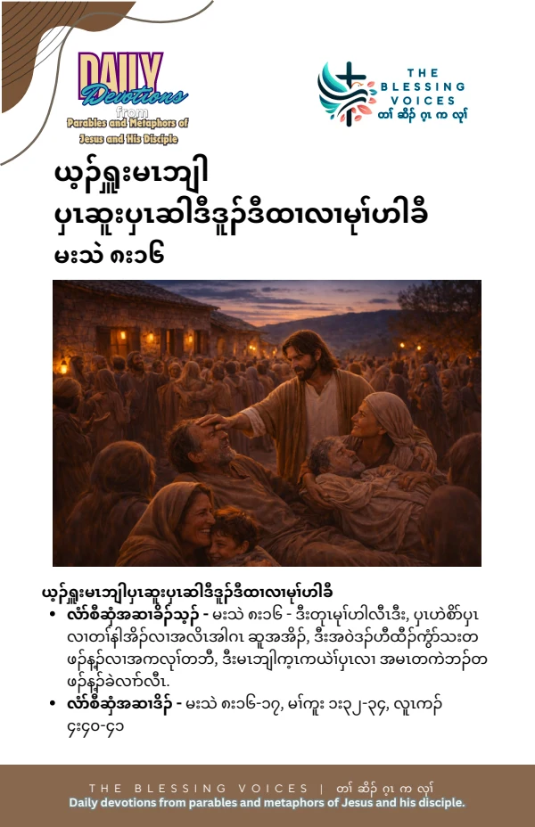

Introduction
Read this English paraphrase of the Gospel account alongside the original companion booklet. Context notes, devotional applications, reflection questions, and prayer are study aids rather than additional biblical text.
The Bible Story
When evening came, people brought many who were possessed by demons to Jesus. He drove out the spirits with a word and healed all who were ill. Matthew connects this ministry with Isaiah’s words about taking infirmities and bearing diseases. This paraphrase follows Matthew 8:16–17. Mark 1:32–34 and Luke 4:40–41 provide parallel accounts.
Historical and Biblical Context
CONTEXT & DEVOTIONAL INTERPRETATIONMatthew places this scene after the healing of Peter’s mother-in-law and cites Isaiah 53:4. Mark describes the gathering at the door after sunset, while Luke describes Jesus laying his hands on those brought to him. These are Gospel accounts of a particular evening.
Spiritual Lessons
CONTEXT & DEVOTIONAL INTERPRETATIONThe scene portrays Jesus’ compassion and authority amid many kinds of suffering. It also shows people bringing others to him. Matthew invites readers to understand these healings in relation to Scripture.
Practical Life Applications
CONTEXT & DEVOTIONAL INTERPRETATIONRemember people who are suffering in your prayers. Offer a meal, companionship, or other appropriate practical support. Read the Gospel accounts attentively without turning this particular event into a guaranteed outcome for every present-day situation.
Reflection Questions
- What do the people do when evening comes?
- What does Matthew’s reference to Isaiah add to your reading?
- How could you accompany someone who is suffering this week?
Closing Prayer
Lord Jesus, we bring before you those who are suffering. Help us offer compassion, companionship, and practical care with faithful love. Amen.
Continue your reflection.
Your free companion study booklet.
Download Free Booklet ↓PDF · Free download